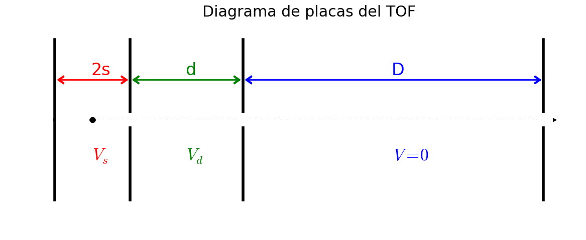

Tiempo de Vuelo¶
Considerar un analizador de masas mediante medición del tiempo de vuelo. Este aparato permite correlacionar el tiempo en el cuál se detectan los iones de una dada especie con su masa. El sistema consiste de tres etapas: una zona de creación y extracción de los iones (de longitud 2s), una zona de aceleración (de longitud $d$), y una zona de vuelo libre (de longitud D) La figura muestra un esquema, con las distancias y potenciales,

Se pide que haga un esquema similar al de la figura usando Matplotlib
Realice un programa que, dada una secuencia de especies de iones atómicos o moleculares, calcule su tiempo de vuelo. El programa debe realizar diferentes acciones dependiendo de los argumentos que se le pasen. Suponiendo que el programa se llama tiempo_vuelo.py un ejemplo de su invocación puede ser (python corresponde a python3):
$ python tiempo_vuelo.py "CO2^1,Ar^1, Ar^2,Al^1,CH3^2"
y el programa debe devolver los tiempos expresados en unidades «razonables», la información de las unidades debe estar disponible de alguna manera adecuada.
Realice los siguientes pasos:
Lea los datos de los elementos del archivo nist_data.txt y guárdelo en alguna estructura adecuada. Note que para cada elemento hay una entrada para cada isótopo. Sólo debe mantener la correspondiente al isótopo de mayor población (Isotopic composition).
Dado un string con los iones como en el ejemplo («CO2^1,Ar^1, Ar^2,Al^1,CH3^2»), sepárelo en sustancias individuales, y calcule la masa y carga de cada uno.
Calcule el tiempo de vuelo como la suma de los tiempos en cada uno de los tres tramos acorde a: \(\begin{align*} T_{s} &= \left[{2 s /(q E_{s})}\right]^{1/2} , & u_{s}= q \,E_{s} T_{s},\,\\ T_{d} &= \left[({u_{s}^{2} + 2, q\,d E_{d}})^{1/2} - u_{s}\right]/(q E_{d}) \,, & u_{d} = u_{s} + q, E_{d} \,T_{d} \,, \\ T_{D} &= D/u_{d} & ~ \end{align*}\)
donde \(T=t /\sqrt{m}\) es el tiempo escalado con la raíz de la masa, \(u=\sqrt{m}v\) es la velocidad escalada. Note que debe utilizar las unidades adecuadas. Para realizar la conversión de unidades puede utilizar el módulo
scipy.constants
4. Utilice el módulo argparse para hacer que su programa acepte argumentos. Debe tener al menos los siguientes comportamientos:
> python tiempo_vuelo.py
Usage: tiempo_vuelo.py [-h] [-s s] [-d d] [-D D] [-o salida] [--Vs=extraccion] [--Vd=aceleracion] sustancias
... (texto explicativo de como usar el programa)
> python tiempo_vuelo.py -h
Usage: tiempo_vuelo.py [-h] [-s] [-d] [-D] [-o salida] [--Vs=extraccion] [--Vd=aceleracion] sustancias
... (texto explicativo de como usar el programa)
> python tiempo_vuelo.py "XpXb^1, O2^1"
Error: debe ingresar una sustancia válida
... (texto explicativo de como usar el programa)
> python tiempo_vuelo.py "H2O^1, N2^1, O2^1"
# Sust tiempo
H2O^1: 7.07 us
N2^1: 8.82 us
O2^1: 9.43 us
> python tiempo_vuelo.py "H2O^1, N2^1, O2^1" -o tiempos.png
> ls tiempos.png
tiempos.png
> python tiempo_vuelo.py "H2O^1, N2^1, O2^1" -o tiempos.dat
> cat tiempos.dat
# Sust tiempo
H2O^1: 7.07 us
N2^1: 8.82 us
O2^1: 9.43 us
Notar:
- En los tres primeros casos debe dar un mensaje informativo, y si corresponde información sobre algún error de uso.
- El argumento «-o» permite sacar los resultados a un archivo en lugar de escribirlos por pantalla. Notar que en los ejemplos el tipo de salida está dado por la extensión del archivo dado como argumento. Debería, al menos, funcionar con extensiones «.dat», «.png», «.pdf», «.eps».
- El resto de los argumentos mostrados en el ejemplo corresponden a los parámetros del analizador, excepto «-h» que se utilizará para dar información sobre el uso del programa.
Extras:¶
Utilice el módulo configparser para leer un archivo de configuración que tendrá los parámetros del tiempo de vuelo en una forma similar a la siguiente
# Parámetros del TOF (esto es un comentario)
[tof]
s= 0.59
d= 1.30
D= 100.0
Vs= 200
Vd= 3000